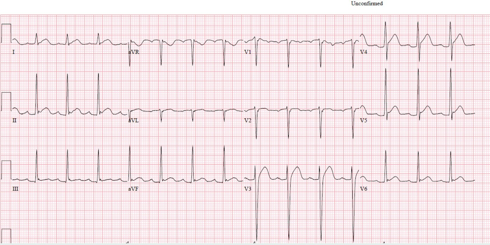
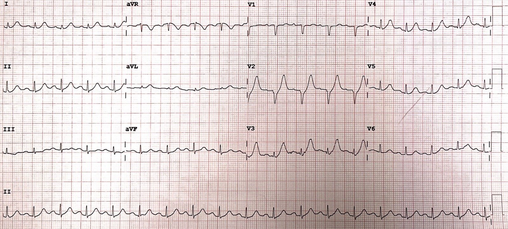
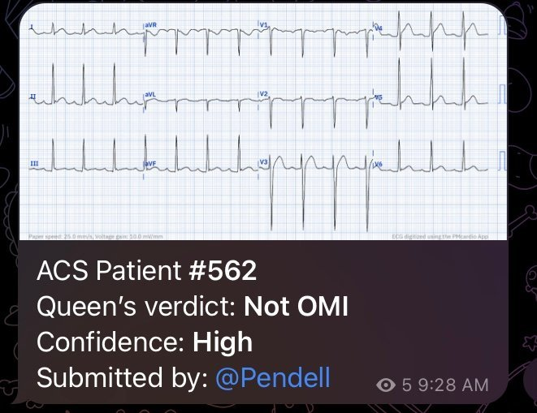
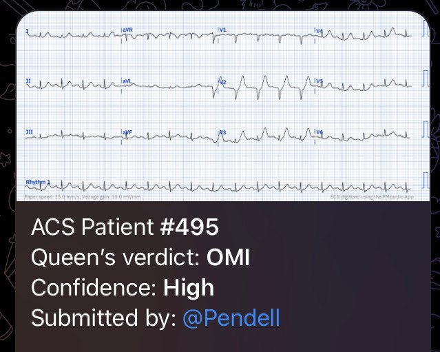
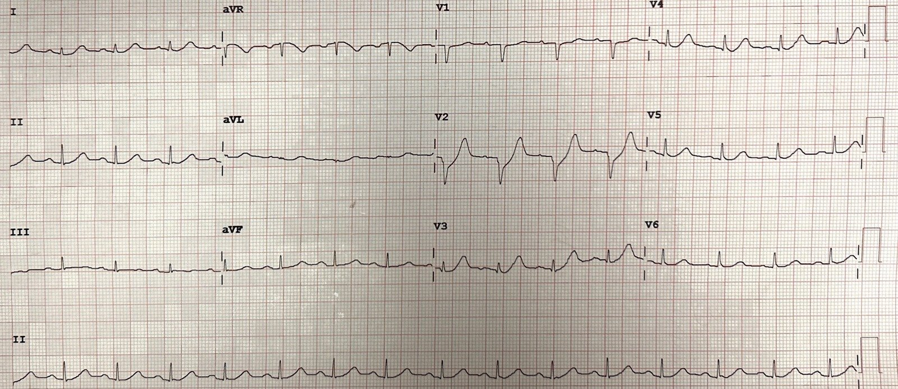
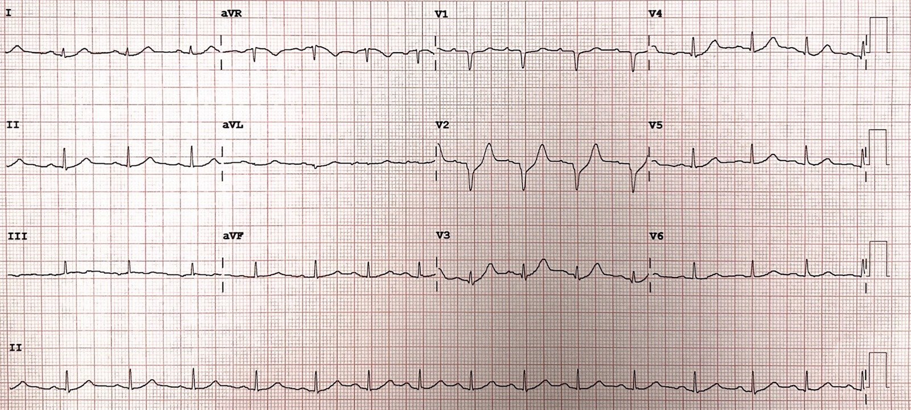
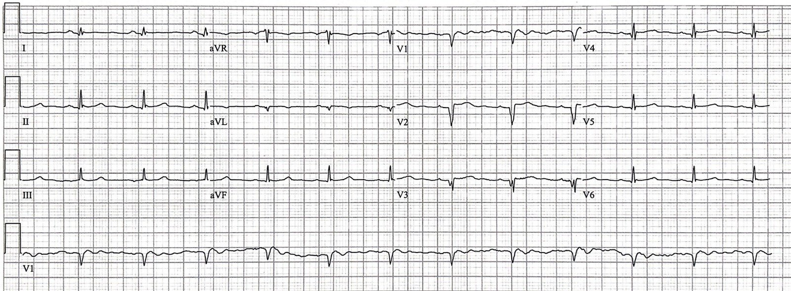
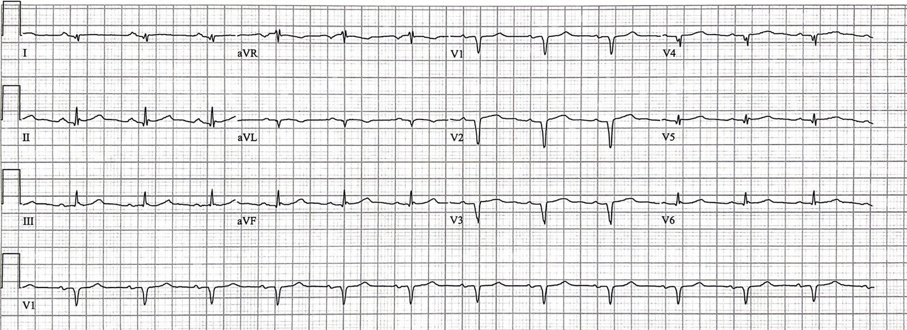
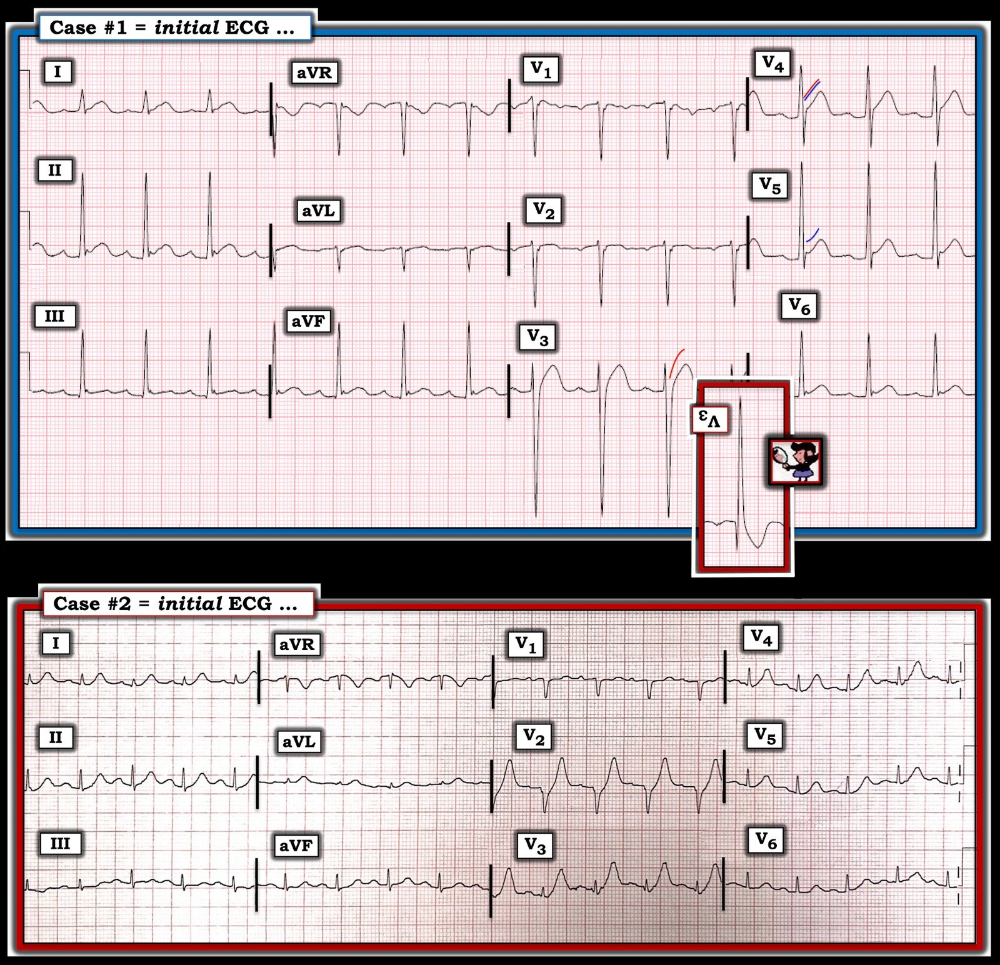
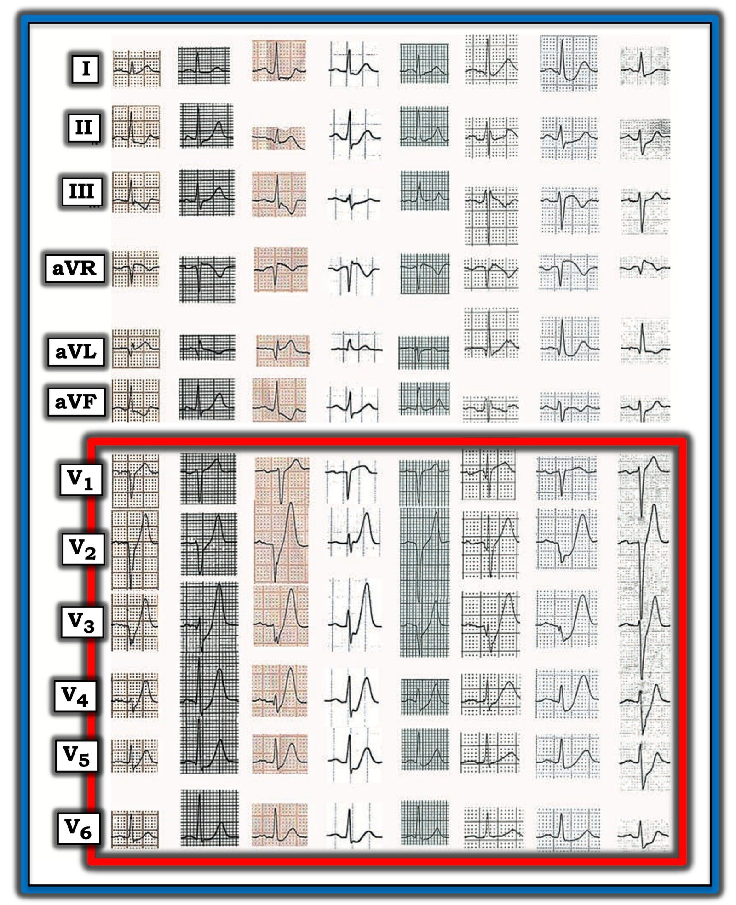

17/04/2023 — Hãy so sánh hai điện tâm đồ này. Một trong hai, không cái nào, hay cả hai cho thấy điều gì quan trọng?
Bản dịch tiếng Việt của bài "Compare these two ECGs. Do either, neither, or both show anything important?" – Dr. Smith’s ECG Blog. Giữ nguyên toàn bộ 13 hình ảnh của bản gốc.
Một ca do BS. Sean Rees MD gửi, Pendell Meyers viết; ca còn lại do Sam Ghali và Steve Smith viết
Hãy xem hai điện tâm đồ dưới đây của hai bệnh nhân tại khoa cấp cứu (ED), trước hết là không kèm bất kỳ bối cảnh lâm sàng nào. Chi tiết đầy đủ của các ca bệnh và kết cục ở phía dưới.
Ca 1:


Ca 2:


Ca 1:
Điện tâm đồ này được SamGhali (@EM_RESUS) gửi cho BS. Smith mà không kèm bất kỳ thông tin nào khác.
Câu trả lời của Smith là: “Giả OMI (OMI Mimic).”
Sau đó, Sam cung cấp thông tin sau:
Điện tâm đồ
này được ghi ở một nam giới người Mỹ gốc Phi 23 tuổi có tiền sử
bệnh tâm thần, đang say rượu/ngộ độc chất cấp, được cảnh sát đưa đến
sau khi bị bắn súng điện (taser). Anh không có triệu chứng của ACS. Hình ảnh
này được nhận ra là một hình ảnh giả OMI (OMI mimic) và không làm thêm thăm dò nào
nữa. Phần còn lại của thời gian lưu tại khoa cấp cứu diễn ra bình thường.
Queen of Hearts nói đúng:


Smith: Vì sao điện tâm đồ có nhiều ST chênh lên như thế này lại KHÔNG phải là STEMI (ngay cả khi đây là một bệnh nhân 60 tuổi bị đau ngực)?
–Thậm chí còn có đoạn ST dạng lồi ở V3!! (khi có ST chênh lên, hình dạng lồi ở bất kỳ chuyển đạo nào trong số V2-V6 là dấu hiệu khá đặc hiệu của tắc LAD).
Các lý do là:
1) điện thế QRS quá lớn (đặc biệt là sóng S sâu ở V3).
2) Tỷ lệ T (thể tích)/QRS không đủ lớn để sóng T được xem là tối cấp.
3) Hình dạng của sóng T đơn giản là “không ổn”. Đây là điều khó giảng dạy, nhưng với hàng trăm ca như vậy, chúng tôi đã huấn luyện thuật toán trí tuệ nhân tạo nhận ra điều này.
4) Có khía điểm J hình thành rõ.
Ca 2:
Diễn giải của Meyers: Tôi được gửi điện tâm đồ này mà hoàn toàn không có thông tin lâm sàng nào, và tôi đã trả lời: “Dễ dàng chẩn đoán tắc LAD cấp.” Có sóng T tối cấp ở V2-V5, I, II, aVL. ST chênh xuống (STD) cũng có ở V2 làm trọn vẹn mô tả sóng T de Winter (sóng T tối cấp với đoạn khởi đầu ST chênh xuống).
Đây là thông tin lâm sàng của điện tâm đồ 2:
Một nam giới ngoài 50 tuổi đến khoa cấp cứu vì đau ngực cấp bắt đầu trong vòng vài giờ qua. Ông cũng cho biết mình “chỉ thấy không khỏe” bắt đầu từ khoảng 14 giờ trước khi đến viện, nhưng cơn đau ngực chỉ được nhận thấy khoảng 2 giờ trước khi đến viện. Lúc đến, ông có nhịp nhanh nhẹ (105-110 lần/phút) và tăng huyết áp (157/92 mm Hg).
Điện tâm đồ lúc phân loại (triage) của ông lúc 0127 là điện tâm đồ ở trên.
Dựa trên khoảng 18.000 điện tâm đồ huấn luyện kèm diễn giải của chuyên gia và kết cục (do Smith và Meyers huấn luyện), AI Queen of Hearts của PM Cardio đưa ra ngay chẩn đoán này trên bất kỳ điện thoại thông minh nào, thậm chí chỉ bằng cách chụp ảnh màn hình một tờ giấy trong điều kiện không tối ưu:


Các bác sĩ lâm sàng đọc điện tâm đồ này là “Không phải STEMI.”
Điểm HEAR của ông (trước khi có kết quả troponin) được ghi nhận là 3, kèm ghi chép “nghi ngờ ACS thấp.”
Ghi lại lúc 0157 khi vẫn còn đau ngực:


Troponin I ban đầu trả về tăng ở mức 350 ng/L (không rõ chính xác đây là xét nghiệm troponin I độ nhạy cao nào, nhưng nhiều xét nghiệm có giới hạn trên bình thường ở nam giới khoảng 20-35 ng/L). Một mức troponin cao như vậy ở bệnh nhân không có tăng troponin mạn tính đã biết, và đang có triệu chứng ACS cấp, có khả năng rất cao là ACS típ 1 bất kể điện tâm đồ ra sao.
Điện tâm đồ ghi lại lúc 0221:


Do vẫn còn đau ngực và troponin dương tính, bác sĩ đã hội chẩn với bác sĩ tim mạch tại trung tâm PCI gần đó, người này trả lời rằng không có chỉ định kích hoạt báo động STEMI, và không có chỉ định tiêu sợi huyết. Bệnh nhân được chuyển đến trung tâm PCI theo diện không cấp cứu trong vài giờ sau đó.
Khi đến trung tâm PCI, troponin lặp lại trả về 13.962 ng/L. Đau ngực được ghi nhận là vẫn tiếp diễn.
Điện tâm đồ ghi lại lúc 1624 (ngay trước khi thông tim):


Bác sĩ tim mạch đọc: “Về mặt kỹ thuật không đạt tiêu chuẩn STEMI nhưng đáng lo ngại về thiếu máu cục bộ.”
Thông tim lúc khoảng 1730:
Thân chung động mạch vành trái: bình thường
LAD: hẹp 30% LAD đoạn gần, ngay sau đó là một chỗ “tắc 99-100% đầy huyết khối” liên quan LAD đoạn gần và đoạn giữa, cũng như một nhánh chéo lớn, với dòng chảy TIMI 1 trước thủ thuật.
LCX: bờ lòng mạch không đều mức tối thiểu
RCA: bờ lòng mạch không đều mức tối thiểu
Đã hút huyết khối và PCI, kết quả đạt dòng chảy TIMI 3 ở LAD và D1.
Troponin kế tiếp 85.528 ng/L (phù hợp với nhồi máu cơ tim diện rất rộng), không đo thêm lần nào nữa.
1824 sau thông tim:


Siêu âm tim: EF 40-45%, rối loạn vận động thành (WMA) vùng trước và mỏm.
Bệnh nhân xuất viện 3 ngày sau đó, và không có dữ liệu theo dõi dài hạn. Nhưng bạn có thể hình dung sự khác biệt về tiên lượng dài hạn giữa bệnh nhân này và một bệnh nhân được điều trị tái tưới máu ngay khi chẩn đoán OMI lúc vừa đến khoa cấp cứu ban đầu.
Chẩn đoán cuối cùng: “NSTEMI”
Smith: hãy nghĩ về điều này: bệnh nhân bị tắc LAD và mất toàn bộ thành trước, vậy mà lại nhận chẩn đoán “NSTEMI”.
NSTEMI là một chẩn đoán rác vô giá trị!
Chẩn đoán nên là OMI hoặc Không-OMI. Trong ca này, đó là OMI.
Những điểm cần học:
OMI không chỉ đơn thuần là một chẩn đoán dựa trên điện tâm đồ, nhưng việc đọc điện tâm đồ thành thạo có thể giúp cải thiện rất nhiều khả năng nhận ra OMI STEMI âm tính (STEMI(-) OMI) và ngược lại, nhận ra các trường hợp dương tính giả theo tiêu chuẩn STEMI.
Có vẻ như đã gần đến ngày mà việc đọc điện tâm đồ bằng AI sẽ là một giải pháp đáng tin cậy và khách quan cho bất kỳ người làm lâm sàng nào để nhanh chóng phân biệt OMI kín đáo với các hình ảnh giả OMI.
Thiếu máu cục bộ tiếp diễn dù đã điều trị nội khoa luôn là một chỉ định chụp mạch vành cấp cứu, điều thường bị bỏ qua như đã xảy ra trong ca này.
Theo Lộ trình Quyết định theo Đồng thuận Chuyên gia ACC 2022 về Đánh giá và Xử trí Đau ngực Cấp tại Khoa Cấp cứu (tài liệu tham khảo bên dưới), sóng T tối cấp và dấu hiệu De Winter hiện đều được xem là “tương đương STEMI” và cần được xử trí giống như STEMI.

===================================
BÌNH LUẬN CỦA TÔI, bởi KEN GRAUER, MD (17/4/2023):
===================================
Bài viết hôm nay của BS. Meyers (với sự đóng góp của các BS. Rees, Ghali và Smith) — là một bài học về cách nhận ra OMI cấp — và phân biệt nó với một trong những “hình ảnh giả OMI” (OMI mimic) thường gặp nhất.
Giống như BS. Smith — ban đầu tôi xem 2 điện tâm đồ của Ca #1 và Ca #2 mà không có sự trợ giúp của bất kỳ bệnh sử nào. Điều cần nhớ từ 2 Ca này nằm ở cách nhận ra ngay lập tức rằng Ca #1 là một “hình ảnh giả OMI“ — trong khi Ca #2 cho thấy những dấu hiệu điện tâm đồ lẽ ra phải dễ dàng nhận ra của sóng T deWinter, mà ở một bệnh nhân có đau ngực mới xuất hiện thì phải được thông tim ngay.
- Để rõ ràng, trong Hình 1 — tôi đã sao lại 2 bản ghi của ca hôm nay. Tôi tập trung bình luận vào một vài điểm bổ sung cho phần bàn luận xuất sắc ở trên của BS. Meyers.


CA #1:
Chúng tôi đã trình bày nhiều ví dụ về LVH ngụy trang thành một “hình ảnh giả” OMI (Xem Bình luận của tôi trong bài ngày 2 tháng Tư năm 2023 — và bài ngày 14 tháng Tư năm 2023, chỉ kể ra những ví dụ gần đây nhất). Mặc dù có “nhiều biến thể của chủ đề này” — tiền đề cơ bản là dù các thay đổi ST-T của “tăng gánh” thất trái thường biểu hiện nhất ở một hoặc nhiều chuyển đạo bên — một số bệnh nhân lại biểu hiện “hình ảnh soi gương” của tăng gánh ở các chuyển đạo trước.
- “Manh mối” đầu tiên cho thấy điện tâm đồ đang bàn khó có thể là OMI cấp — là một hoặc nhiều sóng S ở chuyển đạo trước sâu một cách không tương xứng. Trong khi ở đa số trường hợp LVH trên điện tâm đồ — chẩn đoán được đưa ra dựa vào sóng R cao ở chuyển đạo bên — thì “hình ảnh soi gương” của biên độ sóng R tăng ở chuyển đạo bên này là sóng S sâu bất thường ở một hoặc nhiều chuyển đạo trước. Ví dụ, ở Ca #1 — sóng S ở chuyển đạo V3 sâu tới 33 mm!
- Chẳng phải phần chèn màu ĐỎ là hình ảnh soi gương của chuyển đạo V3 — cho thấy chính xác những gì bạn có thể mong đợi thấy ở sóng ST-T của “tăng gánh” thất trái tại một chuyển đạo ngực bên hay sao?
- Manh mối khác cho thấy ST chênh lên ở nhiều chuyển đạo khác trên điện tâm đồ Ca #1 khó có thể là do OMI cấp — là khía điểm J nổi bật ở các chuyển đạo II,III,aVF; và ở các chuyển đạo V5,V6. Đi kèm với các đoạn ST dốc lên (tức là cấu hình “mặt cười”) ở các chuyển đạo này — hình ảnh này rất đặc trưng của một biến thể tái cực (và rất ít khả năng là dấu hiệu của OMI cấp).
- ĐIỂM THEN CHỐT (PEARL) #1: Tôi nghi ngờ rằng điện tâm đồ ở Ca #1 thể hiện cả các thay đổi tái cực lành tính (khía điểm J ở các chuyển đạo có ST chênh lên dốc lên) — lẫn — có lẽ là LVH (tức là, điện thế tăng cực độ, vượt quá mức mong đợi ngay cả với một người trưởng thành trẻ tuổi + “tăng gánh” thất trái, như thấy ở phần chèn màu ĐỎ của chuyển đạo V3, tại chuyển đạo có biên độ sóng S cực lớn). Hóa ra bệnh nhân có điện tâm đồ ở Ca #1 là một nam thanh niên da đen có tiền sử lạm dụng rượu đã biết (tức là có yếu tố thuận lợi cho bệnh cơ tim do rượu) — và NẾU nam thanh niên da đen này có tăng huyết áp đáng kể kéo dài (thường gặp ở nhóm dân số này) — thì chúng ta sẽ có lời giải thích cho điện tâm đồ bất thường của anh ấy.
- ĐIỂM THEN CHỐT (PEARL) #2: Có lẽ ban đầu bạn lo ngại không chỉ vì ST chênh lên dạng vòm (coving) ở chuyển đạo V3 của điện tâm đồ Ca #1 — mà còn vì ST chênh lên và đoạn khởi đầu ST thẳng đuỗn ở chuyển đạo V4? Nếu vậy — tôi rất nghi ngờ rằng ST chênh lên và thẳng đuỗn ở chuyển đạo V4 chỉ đơn giản phản ánh một chuyển đạo “chuyển tiếp“ giữa ST chênh lên dạng vòm ở chuyển đạo V3 (đường cong màu ĐỎ ở chuyển đạo này) — và ST chênh lên dốc lên ở chuyển đạo V5 (đường cong màu XANH ở chuyển đạo này).
- ĐIỀU CỐT LÕI: Một khi đã quen với việc LVH và các biến thể tái cực thường xuyên đóng vai “hình ảnh giả OMI” như thế nào — sự kết hợp các dấu hiệu thấy trên điện tâm đồ Ca #1 này sẽ ngay lập tức gợi ý rằng bản ghi này là một “hình ảnh giả OMI”. Nhận định này sau đó sẽ được củng cố ngay khi bạn biết rằng bệnh nhân đang bàn là một nam thanh niên da đen có yếu tố thuận lợi cho cả biến thể tái cực lẫn LVH, và không có đau ngực mang tính chất tim mạch.
CA #2:
Tôi thấy băn khoăn hơn khi biết những sự việc liên quan đến điện tâm đồ ở Ca #2. Như BS Meyers đã nêu trong phần bàn luận ở trên — BS Meyers ngay lập tức nhận ra điện tâm đồ của Ca #2 hoàn toàn điển hình cho sóng T deWinter — điều mà ở một bệnh nhân đau ngực mới xuất hiện phải được nhận ra ngay là dấu hiệu của OMI cấp do tắc LAD cho đến khi chứng minh được điều ngược lại.
- Có những hình ảnh nhất định trong đọc điện tâm đồ mà nhân viên y tế cấp cứu phải nhận ra được ngay lập tức. Trong số đó có sóng T deWinter. Cũng giống như hình ảnh Brugada típ 1 trên điện tâm đồ — hội chứng Wellens — STEMI cấp — và nhịp nhanh thất — phải được nhân viên y tế cấp cứu nhận ra ngay lập tức (chỉ kể ra vài hình ảnh thuộc nhóm “nhận ra ngay” này) — thì điều đó cũng đúng với một bệnh nhân đau ngực mới xuất hiện đến viện với điện tâm đồ trông giống như ở Ca #2. Thế nhưng nhiều người trong kíp điều trị (trong đó có ít nhất 1 bác sĩ tim mạch) đã không nhận ra hình ảnh sóng T deWinter ở bệnh nhân bệnh cấp tính này, với cơn đau ngực mới xuất hiện, dữ dội và kéo dài.
Chúng tôi sẽ tiếp tục trình bày các biến thể của “chủ đề” sóng T deWinter. Để ôn lại — tôi chép lại dưới đây phần tóm tắt của tôi về thực thể này từ Bình luận của tôi trong bài ngày 10 tháng Hai năm 2023 trên Dr. Smith’s ECG Blog. Các đặc điểm của sóng T deWinter thấy trên điện tâm đồ Ca #2 gồm:
- Sóng T cao không tương xứng ở nhiều chuyển đạo trước tim (rõ nhất ở V2 và V3 — nhưng cũng thấy ở V4 và V5). Những sóng T này biểu hiện các đặc điểm “tối cấp“: không chỉ cao hơn dự kiến (xét theo biên độ tương đối của QRS ở chuyển đạo tương ứng) — mà còn “béo” hơn ở đỉnh và rộng hơn ở đáy so với dự kiến. Ví dụ — sóng T ở chuyển đạo V3 cao hơn gấp đôi sóng R rất nhỏ ở chuyển đạo này.
- ST chênh xuống tại điểm J ở khởi đầu đoạn ST tại các chuyển đạo có sóng T deWinter cao (tức là, rõ nhất ở V2 và V3 — nhưng cũng gợi ý ở các chuyển đạo ngực bên).
- ĐIỂM THEN CHỐT (PEARL) #3: Dễ bị bỏ sót trên điện tâm đồ ban đầu này ở Ca #2 — không chỉ là phức bộ QS ở V1,V2 — mà còn là việc sóng S ở chuyển đạo V2 bị phân mảnh (trát đậm) ở phần đầu của sườn xuống, gợi ý mạnh (hơn nhiều so với một phức bộ QS đơn thuần ở chuyển đạo này) — rằng nhồi máu đã xảy ra. Điều này càng được củng cố khi thấy một sóng Q nhỏ-nhưng-có-mặt ở cả hai chuyển đạo V3 và V4! Dù các sóng Q này quả thật rất nhỏ — việc chúng đi sau các phức bộ QS ở V1,V2 kèm theo sóng T deWinter và không có sóng q vách ở các chuyển đạo ngực bên hơn là V5,V6 — là dấu hiệu cho thấy nhồi máu đã xảy ra.
- ĐIỂM THEN CHỐT (PEARL) #4: Sóng ST-T cũng bất thường ở các chuyển đạo chi. Mặc dù phức bộ QRS ở cả I và aVL đều rất nhỏ — sóng T ở các chuyển đạo này rõ ràng là tối cấp (tức là, cao hơn và “béo” hơn không tương xứng so với kích thước rất nhỏ của phức bộ QRS). Đoạn ST dẹt kín đáo kèm ST chênh xuống nhẹ cũng thấy ở các chuyển đạo dưới. Trong bối cảnh có sóng T deWinter ở các chuyển đạo ngực — những bất thường ST-T kín đáo hơn này ở chuyển đạo chi khẳng định tính cấp tính của bản ghi này.
- ĐIỀU CỐT LÕI: Như BS Meyers đã nêu — Lộ trình quyết định theo đồng thuận chuyên gia ACC 2022 về xử trí đau ngực cấp (ở trang 1933 trong bản thảo J Am Coll Cardiol 2022) — nay đã đưa cụ thể sóng T deWinter vào — như một dấu hiệu có thể có của “tắc LAD đoạn gần cần chụp mạch vành ngay”. Nhân viên y tế cấp cứu cần nhận ra hình ảnh điện tâm đồ này theo bản năng ở bệnh nhân đau ngực mới xuất hiện!
======================================
NHỮNG ĐIỂM MẤU CHỐT về sóng T De Winter:
Năm 2008 — Robert J. de Winter và cộng sự (BS Verouden, Wellens và Wilde) đã gửi một Thư gửi Tòa soạn đến tạp chí NEJM (New England Journal of Medicine) (N Engl J Med 359:2071-2073, 2008) — trong đó họ mô tả một “hình ảnh điện tâm đồ mới” không có ST chênh lên, báo hiệu tắc cấp đoạn gần động mạch vành LAD (động mạch liên thất trước — Left Anterior Descending).
- Các tác giả nhận thấy hình ảnh này ở 30 trong số 1532 (~2%) bệnh nhân nhồi máu cơ tim thành trước cấp. Thông tim xác nhận tắc LAD ở tất cả các ca — với ~50% bệnh nhân có LAD “vòng qua mỏm”. Tắc thân chung động mạch vành trái thì không có.
- Đây là mô tả ban đầu của các tác giả về hình ảnh điện tâm đồ mới này: “Thay vì ST chênh lên đặc trưng — đoạn ST cho thấy ST chênh xuống dốc lên 1-3 mm tại điểm J ở các chuyển đạo từ V1 đến V6 — nối tiếp vào sóng T dương, cao, đối xứng”.
- Phức bộ QRS thường không giãn rộng (hoặc chỉ giãn rộng tối thiểu).
- Phần lớn bệnh nhân cũng có ST chênh lên 1-2 mm ở chuyển đạo aVR.
LƯU Ý: Để minh họa — tôi đã chỉnh sửa lại Hình 1 từ bài báo gốc của deWinter và cs., công bố trong trích dẫn NEJM năm 2008 này.


Trong bài báo gốc năm 2008 của mình — deWinter và cs. tiếp tục mô tả thêm các đặc điểm sau:
- “Mặc dù sóng T cao, đối xứng đã được ghi nhận là một đặc điểm sớm, thoáng qua, sau đó chuyển thành ST chênh lên rõ rệt ở các chuyển đạo trước tim — ở nhóm bệnh nhân này, hình ảnh mới này lại tĩnh tại, tồn tại từ thời điểm điện tâm đồ thứ 1 cho đến điện tâm đồ trước thông tim.”
- Tăng kali máu không phải là yếu tố góp phần tạo nên hình ảnh điện tâm đồ này (tức là, nồng độ K+ huyết thanh lúc nhập viện của các bệnh nhân này đều bình thường).
LƯU Ý: Nói một cách chặt chẽ — hình ảnh sóng T deWinter như deWinter và cs. mô tả năm 2008 khác với dấu hiệu đơn thuần là sóng T thành trước “tối cấp” — vì các dấu hiệu điện tâm đồ của hình ảnh sóng T deWinter theo định nghĩa chặt chẽ tồn tại từ một giờ trở lên cho đến khi mạch LAD “thủ phạm” được tái tưới máu.
- Như tôi đã nêu ở trên (và như minh họa trong các điện tâm đồ ví dụ lấy từ bài báo của deWinter được trình bày ở Hình 2) — với hình ảnh deWinter theo định nghĩa chặt chẽ, phải có biến đổi ở cả 6 chuyển đạo ngực, trong đó phần lớn các chuyển đạo cho thấy ST chênh xuống tại điểm J dốc lên vài mm và sóng T khổng lồ.
NHẬN XÉT CỦA TÔI về sóng T De Winter: Trong thập kỷ qua — tôi đã quan sát thấy, theo đúng nghĩa đen, hàng trăm ca sóng T kiểu deWinter ở những bệnh nhân có triệu chứng tim mới xuất hiện, trên nhiều diễn đàn điện tâm đồ quốc tế trên internet.
- Nhiều (phần lớn) ca trong số này không phù hợp với định nghĩa chặt chẽ của “sóng T deWinter” — ở chỗ có thể không phải cả 6 chuyển đạo ngực đều bị ảnh hưởng — ST chênh xuống tại điểm J thường rất ít (nếu có) ở nhiều chuyển đạo ngực — và, số chuyển đạo biểu hiện sóng T khổng lồ là có hạn.
- Thay đổi điện tâm đồ ở nhiều ca tôi đã quan sát không “tĩnh tại” cho đến khi tái tưới máu (như deWinter và cs. đã báo cáo ban đầu năm 2008). Tuy vậy, kết quả thông tim theo dõi vẫn thường xuyên xác nhận tắc LAD ở gần như tất cả các ca.
“QUAN ĐIỂM” CỦA TÔI về hiện tượng sóng T deWinter:
Tôi tin rằng có một phổ các dấu hiệu điện tâm đồ mà, trong bối cảnh triệu chứng tim mới khởi phát, có giá trị tiên đoán nguyên nhân là tắc LAD cấp. Tôi cho rằng ở mức độ lớn — những gì thấy được trên điện tâm đồ phụ thuộc rất nhiều vào việc điện tâm đồ được ghi vào lúc nào trong tiến trình bệnh.
- Mặc dù nhiều bệnh nhân trong số này không biểu hiện sóng T deWinter “thực sự” (vì hình ảnh điện tâm đồ của họ không giữ tĩnh tại cho đến khi được tái tưới máu bằng nong mạch vành) — với mục đích thực tiễn là nhận ra kịp thời OMI cấp — tôi không cho rằng điều đó quan trọng ( = ý kiến của tôi) dù đó là hình ảnh sóng T deWinter “thực sự” — hay chỉ là sóng T “tối cấp” đơn thuần (có dạng deWinter).